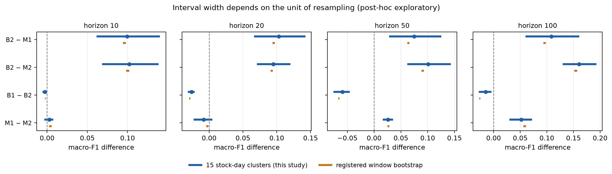
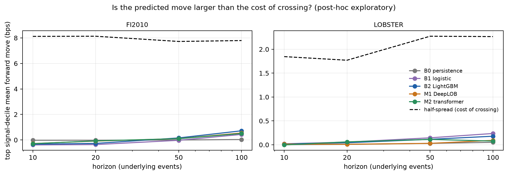

Do deep models earn their complexity on limit-order-book data?
Kartik Munjal · Leakage-audited benchmark and a post-hoc stress test of its conclusions · research note, no alpha or tradability claim
Question and setup
Deep sequence models (DeepLOB, a transformer) are widely reported to beat classical baselines on short-horizon mid-price classification. I test that under a preregistered, leakage-controlled protocol: FI-2010 (5 stocks, 10 days; train days 1–6, validate day 7, test days 8–10, 200-event purge, train-only normalization), horizons 10/20/50/100 events, and zero-shot transfer to five LOBSTER tickers. Each model family (logistic, LightGBM, DeepLOB, transformer) gets exactly 12 tuned configurations per horizon, 5 final seeds, and the same paired evaluation. Study 1 results were frozen before Study 2 was written, so everything below is post-hoc exploratory.
Study 1 result (preregistered)
| Macro-F1, FI-2010 test | h10 | h20 | h50 | h100 |
|---|
| Last-move persistence | 0.798 | 0.689 | 0.473 | 0.366 |
| LightGBM (engineered features) | 0.805 | 0.716 | 0.829 | 0.885 |
| DeepLOB (raw book) | 0.709 | 0.620 | 0.765 | 0.789 |
| Transformer (raw book) | 0.705 | 0.623 | 0.738 | 0.731 |
A tuned gradient-boosted model beats both deep models at every horizon, and on LOBSTER with distribution-matched labels LightGBM again leads. At h10 persistence alone reaches 0.798, so the label is largely recoverable from the last move.
Stress test 1: is the inference honest?
The registered bootstrap resamples contiguous windows inside each stock-day, which treats ~105 overlapping windows as nearly independent. The test set has only 15 stock-day clusters. I recomputed all 164 registered FI-2010 comparisons with the cluster as the unit (exact sign-flip test over all 215 assignments, cluster bootstrap, Holm correction over the full family). Cluster intervals are a median 10.6× wider (10th–90th percentile 3.7×–21×).

Blue: 15 stock-day clusters. Orange: registered window bootstrap. Same point estimates, very different widths.
- 142 of 164 FI-2010 comparisons remain significant after Holm correction; LightGBM beats DeepLOB at h10, h20, h100 in 15 of 15 stock-days.
- Exception: at h50, LightGBM beats DeepLOB in 10 of 15 stock-days (Holm p = 0.26). The headline holds at three of four horizons, not four.
- LOBSTER: five tickers make the smallest attainable p-value 0.0625, so no comparison can be significant by construction. LightGBM leads DeepLOB on 5 of 5 tickers at every horizon, which is consistent but not testable.
Stress test 2: do predictions matter in return units?
I turned each model's probabilities into a signal P(up)−P(down) and evaluated against realized forward mid-price moves in basis points: Spearman IC per cluster, cross-fitted out-of-sample R2, and mean forward move by cross-fitted signal decile, compared with the half-spread a liquidity taker pays.

Mean forward move in the top signal decile vs half-spread. Every model sits far below the cost line.
- Best top-decile move is 0.72 bps (FI-2010) and 0.24 bps (LOBSTER), against half-spreads of ~7.8 and ~2.4 bps. All 40 system-horizon cells have negative taker edge.
- On LOBSTER, logistic and LightGBM reach IC 0.21–0.24 at h50–h100 versus 0.09–0.12 for DeepLOB: the same ranking as the classification metrics, now in return units.
A data property that changes how FI-2010 should be read. The shipped labels match the documented formula on public prices in only 64% (h10) to 25% (h100) of rows. Persistence scores 0.80 macro-F1 on the labels yet has IC −0.09 (0 of 15 clusters positive) against realized public-price moves. FI-2010 classification scores and FI-2010 return-unit scores are therefore measuring different things; LOBSTER, where labels and returns share a source, is the cleaner return-unit evidence.
What I conclude, and what I do not
- Under this protocol and data, model complexity did not buy accuracy or transfer, and the finding is robust to stricter inference at 3 of 4 horizons.
- I do not claim deep learning is inferior in general: LightGBM gets engineered order-flow features while the deep models get the raw book, so architecture and representation are confounded.
- I do not claim any tradable signal. Predicted moves are one to two orders of magnitude below the cost of crossing the spread.
Next steps (planned, not done)
- Separate model from representation: {raw book, engineered, both} × {LightGBM, DeepLOB, transformer} at matched trial budgets.
- Market-invariant inputs (price distance in ticks, size as depth share) to test whether the fixed-label transfer collapse is a scaling artifact.
- Multi-week crypto L2 data with preregistered walk-forward splits, giving many more day-level clusters, plus data-scaling and drift curves.
- Self-supervised pretraining with throughput benchmarks, and an order-book replay simulator with queue position and latency.
Code, protocol, amendments and every number: github.com/kartikmunjal/Lob-DL (docs/PREREGISTRATION.md, docs/STUDY2_PROTOCOL.md, reports/study2/).